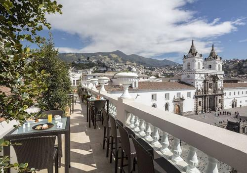

Casa Gangotena
Resumen del Lugar
- Ubicación: Centro Histórico de Quito
- Especialidades: Comida local, Platos tradicionales gourmet
- Ambiente: Colonial, moderno y acogedor
- Precio promedio: $$$
- Horario: Abierto todos los días, 07:00 am - 23:00 pm
- Recomendación: Prueba la cocina Mestiza
Video Promocional
Reseñas
| Usuario | Fecha | Calificación | Comentario |
|---|---|---|---|
| Prisv1 | 2023-05-13 | 5/5 | ¡La comida es increíble! |
| MiriamD72 | 2023-02-15 | 4/5 | Buen servicio, pero un poco caro. |